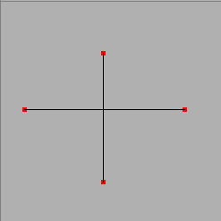
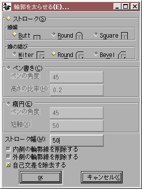
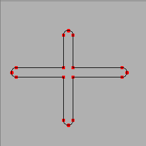
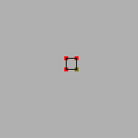
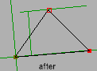
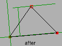

エレメントメニュー
- ... フォント情報(F)...
- ... グリフ情報(I)...
- BDF 情報...
- 情報を得る(I)...
-
組版機能(Y)
- 機能をフォントにコピー(C)...
- デフォルトのATT(D) (Advanced Typographic Tables)
- すべての機能を削除(R)
- 機能を削除(E)...
- 未使用の入れ子になった機能を削除(N)
- 機能タグをつけ直す(T)...
- 依存するグリフを表示
- 問題点を発見(O)...
- 使用するビットマップ(A)...
- ビットマップの再生成(B)...
- 変形(T)
- 輪郭を太らせる(E)...
- 重複処理(V)
- 単純化(S)
- 極大点の追加(X)
- 効果
- Meta Font...
- 自動トレース(R)
- 点を揃える(L)
- 座標を丸める(D)
-
順序
- 最初(F)
- 前に(E)
- 後に(A)
- 最後(L)
- 時計回り(O)
- 反時計回り(N)
- アウトラインの向きを修正(C)
- 組み立て(U) フォントの統合(M)...
- フォントの補間(L)...
- フォントを比較...
その他、FontForge のデフォルトのままのビルドではメニューには現れませんが、configure-fontforge.h を変更してからコンパイルすることによって利用可能になるメニュー項目が 2 個あります。
- フォント情報(F)...
-
どのビューから実行した場合でも、フォント情報ダイアログを起動します。
CID フォントでは、CID フォント全体の情報 (CID→CIDフォント情報(I)で設定できます)ではなく、現在のサブフォントに関する情報の設定ができます。
- グリフ情報(I)...
- どのビューから実行しても、グリフ情報ダイアログを起動します。
- BDF 情報
- ビットマップを含むフォントを編集している場合、フォントビューまたはビットマップビューでこのコマンドを呼び出すと BDF 情報ダイアログ が起動します。
- 情報を得る(I)
- アウトラインビューでは選択した物によって異なる 4 種類の異なるダイアログ (点の情報、画像情報、参照情報、アンカーポイント情報) のどれかを起動します。
- 組版機能(Y)
-
機能をフォントにコピー(C)...
- このダイアログを使うと、あるフォントに含まれる機能のセットを他のフォントにコピーすることができます。
- デフォルトのATT(D)
-
フォントビューでは、GPOS と GSUB テーブルの様々な機能の値を生成することができるサブメニューを起動します。
このサブメニューは機能名のリスト (それに加えて、算出可能なすべての値に対するデフォルトを指定する“All”と、すべての合字に関するデフォルトを与える“Ligatures”) からなります。FontForge は選択中のすべてのグリフに対するデフォルトを探します。それに加え、特別な項目が 1 個あります:
- タグへの接尾子...
-
Adobe のグリフ命名の慣例では、別字形のグリフは標準グリフの名前に接尾子を追加した名前をつけることになっています。これにより、“A”のスワッシュ字形は“A.swash”という名前をつけることになります。
このコマンドを使用すると、機能タグに対応する接尾子を FontForge に対して指定することができます。(上の例で言えば、‘swsh’機能に“.swash”という接尾子を対応づけたことになります——特別にそうしないよう指定しないかぎり、デフォルトでこうなります。FontForge はあらかじめこの対応を知っています)。
- すべての機能を削除(R)
- すべての組版機能を削除します。
- 機能を削除(E)...
- このダイアログを使用すると、どの機能を削除するか選択することができます。
- 未使用の入れ子になった機能を削除(N)
- 入れ子になった機能で、コンテキスト依存機能や連鎖機能からも Apple の状態機械からも参照されていないものがある場合、このコマンドはそれらをすべて削除します。
- 機能タグをつけ直す(T)...
- この機能 を使用すると、指定した機能に関する OpenType のタグ (または機能/設定) を変更することが可能です。(これはカーニング情報のタグはつけ直しません)。
- 参照一覧(R)...
-
このダイアログはビットマップビューでは使用できません。どのグリフが現在のグリフへの参照を含んでいるかを表示します。これを実行すると、現在のグリフに依存するすべてのグリフを一覧表示するウィンドウが現れます。そこでグリフを選択して
[表示]ボタンを押せば、そのグリフを開くことができます。 - 置換一覧(S)...
- 現在のグリフに依存する置換 (合字、複数文字への置換など) をすべて表示します。例えば“i”を選択した場合、“fi”が合字として依存しているのが表示されるでしょうし、“A.swash”を選択している時は“A”が‘swsh’選択型置換として表示されているのが表示されるでしょう。
FontForge が取り扱うのはピクセルサイズであってポイントサイズではありません。ピクセルとポイントの間の変換はシステムごとに異なり、実際には表示画面ごとに異なります。1 ポイントは (約) 1/72 インチですが、1 ポイントが何ピクセルに相当するかは画面の設定によって異なります。通常 1 ピクセルは 1/72 インチ〜1/144 インチです。システムが異なると "標準" としてサポートされるデフォルトの画面解像度は異なります。FontForge は、以下の標準について知ろうと努めています。
画面解像度 |
72dpi Mac |
75dpi X |
96dpi Win |
100dpi X |
120dpi Win |
|---|---|---|---|---|---|
| 10pt | 10 | 10 | 13 | 14 | 17 |
| 12pt | 12 | 12〜13 | 16 | 17 | 20 |
| 18pt | 18 | 19 | 24 | 25 | 30 |
| 24pt | 24 | 25 | 32 | 33 | 40 |
残念ながら、あなたの画面解像度はおそらく標準解像度とは一致しないでしょう。X では標準解像度は 75dpi と 100dpi で、MS Windows では 96 dpi と 120dpi、Mac では 72dpi です。このダイアログは、ピクセルサイズと、これらの解像度におけるポイントサイズとの間で変換を行います。
通常は、新しいグリフはアウトラインフォントをラスタライズすることによって作成されます。システムに freetype2 ライブラリがインストールされている場合 (そして「FreeType を使う」チェックボックスにチェックが入っている場合) FontForge はビットマップの生成に FreeType ラスタライザを使用します。それ以外の場合、FontForge は内蔵ラスタライザ (能力では劣りますが、オーバヘッドは少し削減されます) を使用します。
最後に、もしアウトラインフォントが存在しない場合、新しいグリフはフォントビュー内に表示されている (ビットマップ) フォントを拡大・縮小して作成されます。
CID フォントでは、各サブセットにはビットマップは存在しません。その代りに、サブフォントの複合体全体がビットマップを共有します。
 FontForge はアンチエイリアス表示のビットマップフォントもサポートしており、このダイアログを使ってそれらを生成するように設定することもできます。12 ポイントのアンチエイリアスフォントを各ピクセル 8 ビットの階調で作成したいなら、上のダイアログに 12@8 と入力します。FontForge は各ピクセル 1, 2, 4, 8 ビットのフォントをサポートしています (各ピクセル 1 ビットのフォントは標準ビットマップで、その他はグレイマップです)。
FontForge はアンチエイリアス表示のビットマップフォントもサポートしており、このダイアログを使ってそれらを生成するように設定することもできます。12 ポイントのアンチエイリアスフォントを各ピクセル 8 ビットの階調で作成したいなら、上のダイアログに 12@8 と入力します。FontForge は各ピクセル 1, 2, 4, 8 ビットのフォントをサポートしています (各ピクセル 1 ビットのフォントは標準ビットマップで、その他はグレイマップです)。
(新しいグレイマップは古いグレイマップを拡大・縮小して作成することはできません。グレイマップフォントを作成したい場合、アウトラインフォントを持っている必要があります)。
上と同じように、グレイマップを変更したい場合は <ピクセルサイズ>@<ピクセル階調のビット数> で指定することができます。
- 変形(T)...
- フォントビューとアウトラインビューではこのコマンドは変形ダイアログを表示します。このコマンドは普通に考えて利用できそうな標準的な線形変換 (回転、拡大・縮小、平行移動、傾き) を提供します。
- 透視変換(P)...
- このダイアログを使うと、グリフに対して透視変換を施すことができます (これは非線形変換の一種です)。
- 非線形の変形(N)...
-
このダイアログ を使うと、一般的な変換を施すことができます (線形変換も非線形変換も可能です)。本質的には、x と y がどのように写像されるかを 2 個の等式で指定します。
- 水平方向に反転(H)
- ビットマップを水平方向に反転します (ビットマップビューのみ)。
- 垂直方向に反転(V)
- ビットマップを垂直方向に反転します。(ビットマップビューのみ)
- 時計回りに90°回転(R)
- ビットマップを時計回りに90°回転します。(ビットマップビューのみ)
- 反時計回りに90°回転
- ビットマップを反時計回りに90°回転します。(ビットマップビューのみ)
- 180°回転
- ビットマップを 180°回転します。(ビットマップビューのみ)
- 傾き(S)...
- ビットマップを傾ける割合を指定します。1:3 の時は、y 方向に 3 ピクセル上にいくごとに 1 ピクセル横に傾くことを意味します。(ビットマップビューのみ)
configure-fontforge.h を修正して FontForge をビルドしなおす必要があります。このコマンドを使うと、非線形の座標変換を 2 個の数式として指定することができます (最初が x 座標の変換式を、2 番目が y 座標の変換式を表します)。これらの数式には x と y の非常に一般的な式を書くことができます。構文の説明については、スクリプト処理のページを参照してください。


上図は、ストロークの太め処理が何を行うかの簡単な例です。左上にある 2 本の開いたパスを元に、それらを右の 2 本の閉じたパスに変換します。 
「
輪郭を太らせる(E)」ダイアログは、パスを太くする処理のさまざまな様相を制御することができるダイアログを起動します。ストロークの幅、開いたパスの端をどう描くかおよび 2 本のスプライン (または直線) がつながる点で傾きが等しくない場合 (すなわち、角になっている点で) どのような形になるかを選ぶことができます。または、パスをカリグラフィ用のペンや楕円のペンでなぞった時のような形を選ぶこともできます。また、閉じたパスに対しては、生成された輪郭のうち内側にある物を除去するか、または外側にある物を除去するかも選択することができます。(注意: パスの削除を行う前には、エレメント(L)→アウトラインの向きを修正(C)を使って、グリフに含まれるパスの方向が正しいことを確めてください (向きが間違っていると、反対の輪郭が削除されてしまいます))。
configure-fontforge.h を修正してから FontForge を再ビルドする必要があります。このコマンドはクリップボードの内容をとり、それを選択中のパスに当てはめるためのタイルであるかのように扱います。
- 重なり合う図形を結合(R)
-
ビットマップビューには存在しません。フォントが 2 次スプラインのときは使用できません1。2 本の閉じたパスが交差するとき、それらを重なり合っていると言います。このコマンドは、重なり合いを取り除いて 1 本のパスに変換します。
パスの向きが正しいことを確かめておいてください。2 本の輪郭をもつ文字“O”を考えましょう。2 本の輪郭が同じ方向を向いている場合、内側のものが削除されます (外側のパスが全体に重なり合っているからです) が、輪郭同士が逆向きになっている場合、内側のパスは保持されます。交差するパスが逆向きになっているときは非常に奇妙なことが起こります。

このコマンドは FontForge の中でおそらく最もバグが多いはずです。ですから、FontForge はコマンドを起動する前にエラー回復ファイルに現状を保存します。
警告: 平行な (またはほとんどそれに近い) スプラインは問題を起こします。あまりに近い点も問題を起こす可能性があります。 - 重複部分を抽出(I)
-

 これは 2 つの領域の交差部分以外のすべてを削除します。
- 重複部分を除去(E)
-

これは選択された輪郭内の領域を選択されていない輪郭から除去します。アウトライングリフビューでのみ使用可能です。
- 交点を見つける(F)
- これは重なり合う輪郭同士の交点を見つけ、そこを通るパスそれぞれに点を追加します。
-
単純化(S)
- ビットマップビューでは使用できません。パス上にたくさんの点があって、そのうちのいくつかは実質的にはパスの形を指定する役割を果たしていない場合、このコマンドは無駄な点を取り除きます (このコマンドは線の傾きが水平または垂直になっている箇所にある点は取り除きません。PostScript インタプリタではそれがあると都合がいいからです)。
- さらに単純化
-
これは
単純化(S)コマンドの変種で、Shift キーを押しながらメニューを呼び出すと使用できます。単純化処理によってどういう種類の誤差が生じてもよいかを指定することができるメニューが起動します。以下の項目が設定可能です:- 単純化の結果の輪郭が、オリジナルからどれだけ離れてもいいか
- 極値にある点を取り除いてもいいか
- 端点の所で傾きが変化してもいいか
- (制御点を調節することにより、) 角の点を曲線上の点に転換してもいいか
- 線から飛び出た小さなコブを平滑化するか
- 直線を完全に単純化することを試みるか
最後に、今回使用する値の組を、それ以降に実行する
単純化(S)コマンド群のデフォルト値とするかどうかを指定することができます。 - 不要な曲線を除去(N)
-
これは
単純化(S)コマンドの特殊な場合です。この場合、実際には直線を描いているのに不要な制御点がある場合、このコマンドがそれらの制御点を取り除きます。また、長さ 0 のスプラインを取り除きます。 - 開始点を正規化(P)
-
このコマンドは、輪郭の開始点 (または選択された輪郭) を輪郭上の左端の点をに置き換えます。水平座標が同じ点がいくつかある場合、ベースラインに最も近い点を選択します。これを行うのには 2 つの理由があります:
- PostScript Type1 および Type2 フォントでは (通常) グリフを表現するコードのサイズを僅かに縮減します。(この処理がコードサイズを増やすような場合は無いと思いますが、最適化が意味をもたない場合があるのは確かです。
- FontForge が、再利用可能でサブルーチンに移動できるコード片をより多く発見することができます。
- 輪郭の順序を正規化(C)
- 輪郭の順序を並べ替え、最初に左端の点が最初にある輪郭が、次に左端の点がその次に左側にある輪郭がという具合に並ぶようにします。これも Type1 フォントのサイズを僅かに縮小するはずです。
 ユーザは影の長さと角度を調節することができます。
ユーザは影の長さと角度を調節することができます。
注意: これは TeX の .mf ファイルを読み込みません。この名前は、機能面で似たところがあるためにつけました。
- 座標の平均値(A)
-
このコマンドは選択中のすべての点を調べ、値のばらつきが少ない方の座標軸を選択します。次に、その軸上での平均値を取って中間点を求め、選択中のすべての点をその平均値に揃えます。
ですから、ほとんど水平に並んでいる線がある場合、その端点を選択してこのコマンドを適用するとその線は水平になります。


(選択した点がちょうど 2 個で、それらが 45°に近い斜めの関係にある場合は、水平・垂直ではなく斜め方向に揃えられます。) - 点の間隔を均等に(S)
-
3 個以上の点を選択している場合、FontForge は差が大きいほうの座標軸を選び、その軸に沿って等間隔に点を分散させます。
点を 1 個だけ選択している場合 (しかもその点がパスの中間にある場合)、点の位置は (内部的に) 選択した点の両隣の点を結ぶ直線が座標軸に平行になるように回転した座標軸で表現されます。選択中の点はその軸に沿って 2 点の中間となる位置に移動します。この時、それに直行する軸方向の位置は固定しています。
これは非常に複雑な説明方法です: 水平な線上に置かれた 2 個の点の両方に接続した 1 個の点を選択した場合、選択した点の x 座標は 2 個の点の中間になり、それに対して y 座標は変更されません。
 

- グループ間を均等に(R)...
-
これは上のコマンドと似ていますが、相対位置を保ちつつ移動したい点のグループをとても簡単に定義することができる点が異なります。このコマンドは、それらのグループごとの間隔を、選択した座標軸に沿って均等に配置します。1 個のグループは、その中の点同士がすべてグループ内の他の 1 個以上の点と、所定の最大距離以内にある点の集まりとして定義されます。このコマンドの目的は、文字“m”のステム同士を横方向に均等に配置するような操作を可能にすることです。残念ながら、これが役に立たない場合は非常に多くあります (セリフつき書体では、しばしばあるセリフと他のセリフとの間隔のほうがセリフの属するステムとの間よりも狭くなります)。


- 平行に(P)...
-
4 個の点を選択中で、それらの間に 2 本の直線が通っている場合、FontForge はそれらの線が平行になるように点を移動します。4 本の直線が通っている場合 (つまり、四角形を構成している場合)、FontForge はそれらを平行四辺形に変形します (これは直線だけに作用し、曲線のスプラインには作用しないことにご注意ください)。
移動するのは最後に選択した線です (FontForge は、どの点が最後に選択されたか覚えていないことがしばしばあります。その時は 1 個をランダムに選びます。これを避けたい場合は、点を選択した後で移動したい点をシングルクリックしてください)。
- 整数値に(I)丸める
- ビットマップビューでは使用できません。FontForge は点の位置を実数として格納しています (つまり、それらの値には端数が含まれます)。TrueType は整数値のみをサポートしています (また、Type1, Type2 の両形式のフォントでもほとんどの場合は整数値が望ましいでしょう——実数値を使用するとフォントファイルが大きくなります) ので、フォントを出力する時には座標は整数値に丸められます。このコマンドは、選択した対象の座標値をすべて一番近い整数に丸めます。
- 1/100単位(H)に丸める
-
ビットマップビューとメトリックビューでは使用できません。FontForge の Type1 出力の精度は、出力ダイアログの
[オプション]で、整数への丸めを off にした場合でも、em 単位の 1/100 に限られています。 - 近い値をまとめる(C)
- ときどき、非常に近い座標値を確実に同じ値にしたいことがあります。このコマンドはそれを行います。
輪郭と参照の両方を含むグリフがある場合、FontForge が参照と輪郭のどちらを先に描くか (それとも 2 つを混ぜこぜに描画するか) を指定することはできません。これが問題になる場合は、参照のリンクを解除してください。
選択中のパスがない場合、または選択中のパスがすべて開いたパスである場合、このメニューは灰色表示で選択できません。選択中のパスに自己交差しているものがある場合、結果がどうなるかは不定です。
選択中のパスがない場合、または選択中のパスがすべて開いたパスである場合、このメニューは灰色表示で選択できません。選択中のパスに自己交差しているものがある場合、結果がどうなるかは不定です。
このコマンドは、2 本のスプラインが交差している場合、予想外の結果を生じることがあります。
グリフに反転した参照が含まれている場合は、このコマンドでは参照に含まれる輪郭を直接修正することはできません。その代りに、参照のリンクを解除するかどうかを尋ねるので、解除した後はその (以前の) 輪郭を他の輪郭と同様に扱うことができるようになります。
前者のメニュー項目はアクセントつき文字を組み立てるだけです。後者では、一般的な複合グリフ (分数、合字、括弧つき数字、ローマ数字など) を組み立てることもできます。
現在のグリフがアクセントつきグリフであれば (なおかつ基底グリフとアクセントが既に作成してあれば)、このコマンドはグリフの前面に含まれている内容をすべて削除し、基底グリフに対する参照と、アクセントのグリフに対するもう一つの参照を前面に配置します。例えば、現在のグリフが“À”であれば、“A”への参照がそのグリフに追加され、“`”への参照が“A”と中心を合わせて配置されるでしょう。
もし コピー元の指定(F) が「すべてのフォント」に設定されていると、すべてのサイズのビットマップに対して同じ処理を行います (アウトラインビューで実行した場合も行います)
より完全な説明は、アクセントつきグリフに関するセクションにあります。
文字“Alpha”と“A”を考えてみましょう。これらはしばしば同一のグリフで表現されます。このコマンドはエンコーディングを微調整して、U+0391 の文字コードが“A”という名前のグリフを指し示すようにします。これは、“Alpha”というグリフが“A”という別のグリフを参照するのとは微妙に異なることに注意してください。
Adobe は、1 個のグリフに複数の符号位置を割り当てるのではなく、参照を使用するべきであると示唆していますが、この方法はフォントフォーマットに違反しているわけではありません。
FontForge は、CID フォントを統合する時には以下の処理を行います。
- ウィンドウ内のフォント (統合する先) が通常フォントでもう片方のフォント (統合対象) が CID フォントの場合、統合対象のフォントは事実上単一化され、その結果が統合先に送られて統合されます。
- 統合先が CID フォントで統合対象が通常フォントの場合、統合先フォントのサブフォントのうち、現在アクティブになっているものに統合対象フォントが送られます。
-
両方が CID フォントの場合、以下の条件を満たしていなければなりません:
- CID レジストリとグリフ集合が同じである
- 統合先の補遺番号が最低でも統合対象の番号と等しい
- 統合先のサブフォントの個数が最低でも統合対象のサブフォントの個数と等しい
これらの条件が満たされる場合、統合先のフォントに存在しない CID をもつグリフが、統合対象のフォントから元と同じ名前のサブフォントに送られます。
これはいくぶん問題だと感じますが、より良い解決方法を思い付くことができません。
FontForge は高度タイポグラフィ機能、カーニング、合字などもコピーします。
例: ウェイトが light のフォントから bold のフォントへの補間を行った場合、medium のフォントは2 つの中間の 50% にあたり、extra-bold のフォントは 200% に、thin は -100% になるでしょう。
 時には、あるフォントの 2 つのバージョンを比較して、どこが変更されたかを確認できると便利なことがあります。このコマンドでは以下の変更をチェックすることができます:
時には、あるフォントの 2 つのバージョンを比較して、どこが変更されたかを確認できると便利なことがあります。このコマンドでは以下の変更をチェックすることができます:
- グリフの追加または削除
- アウトライングリフの変更
- ビットマップグリフの変更
- フォント名の変更 (TrueType の‘name’テーブルといくつかの PostScript 名)
- フォントの含むグリフ置換 (合字だの何だの) の変更
- フォントの含むグリフ位置指定 (カーニングだの何だの) の変更
同じフォントの TrueType 版と PostScript 版の比較をすることもできます。通常は FontForge はすべてのスプラインが完全に一致するかどうかを確かめるための検査を行いますが、これを使って、片方のフォントが常にもう片方のフォントの同等な輪郭とどこでもほぼ一致するかどうか、または片方のフォントに含まれる輪郭がもう片方のフォント内の参照に含まれているか (これは、フォーマットが参照を含まない PostScript フォントを比較する時によく起こります) を検査することもできます。
PostScript のヒントマスクの比較もまた、どこと無くあやふやな所のある問題です。(私の考えでは) 等価なヒントマスクを表現する多くの方法が可能であることがしばしばありますが、それらが等価であると示すいいアルゴリズムがありません——思いもよらないようなヒントの使い方を Adobe がしていることに気づいてからはなおのことです。
そして最後に、比較先のフォントと比較元のフォントで異なるグリフのそれぞれに対し、比較先のフォントの欠落したグリフを比較元のフォントの対応するグリフの背景に配置することができます。これは、矛盾点を修正するのに役立つでしょう。

その他のメニュー